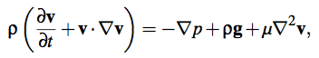

Water Simulation
Smoothed Particle Hydrodynamics
Adam Alsegård, Benjamin Wiberg, Emil Juopperi, Jonathan Grangien, Simon Hedlund
Navier-Stokes ekvationer
- Applying Newton’s second law to fluid dynamics
- 
Smoothed Particle Hydrodynamics (SPH)
Implementation
- Matlab
- C++
-
OpenCL
- Multi-core computing
- CL-GL shared memory